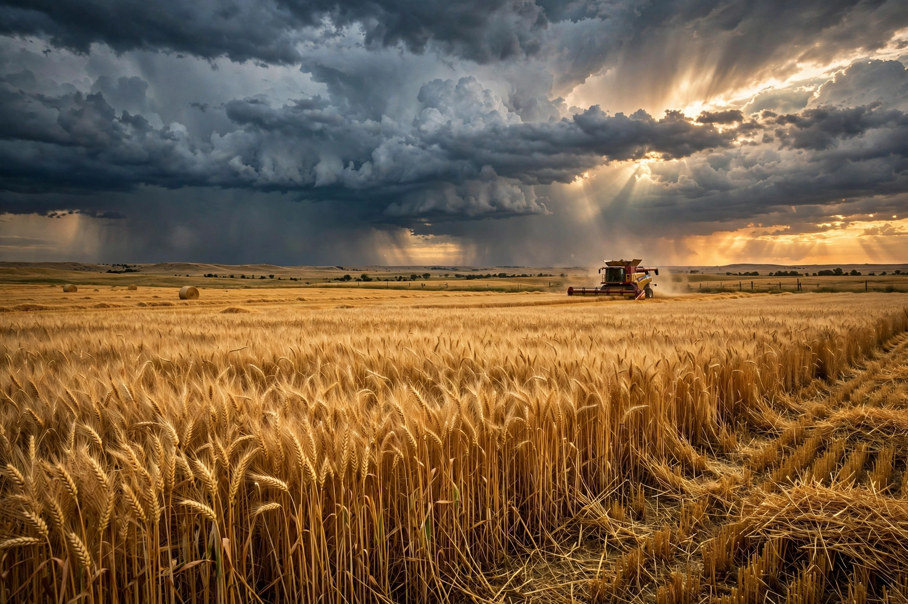

Kansas is a state in the Midwestern United States. Its capital is Topeka and its most populous city is Wichita; the largest metropolitan area is the bi-state Kansas City area, shared with Missouri.

| State of Kansas | |
|---|---|
| Capital | Topeka |
| Largest city | Wichita |
| Admitted | 29 January 1861 (34th) |
| Population | c. 2.9 million |
| Nickname | Sunflower State |
Named for the Kansa Native Americans, Kansas Territory was the scene of 'Bleeding Kansas' violence over slavery before statehood as a free state in 1861. The landmark Brown v. Board of Education case originated in Topeka (1954).
Located on the Great Plains, Kansas is a leading producer of wheat, sorghum and sunflowers, and a major aviation manufacturing centre in Wichita. Dodge City recalls the cattle-drive frontier era.
Kansas is the setting of L. Frank Baum's The Wonderful Wizard of Oz. Its sports teams include the Kansas City Chiefs (based in Missouri) supported across the metro.